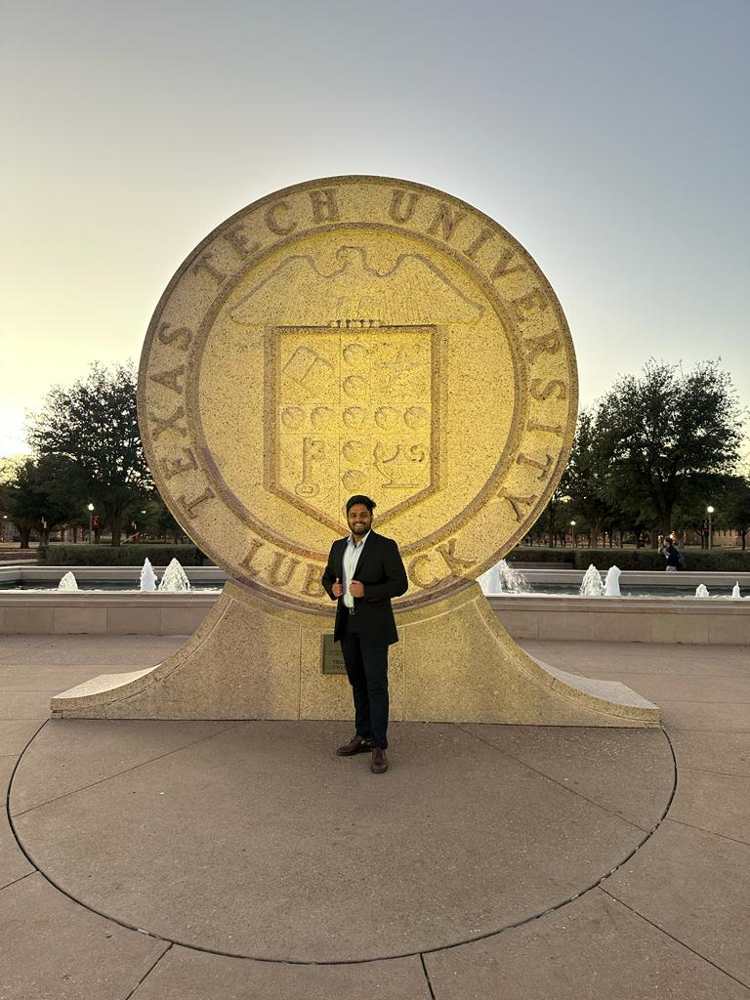
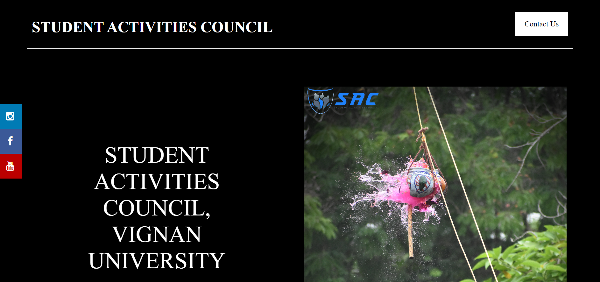
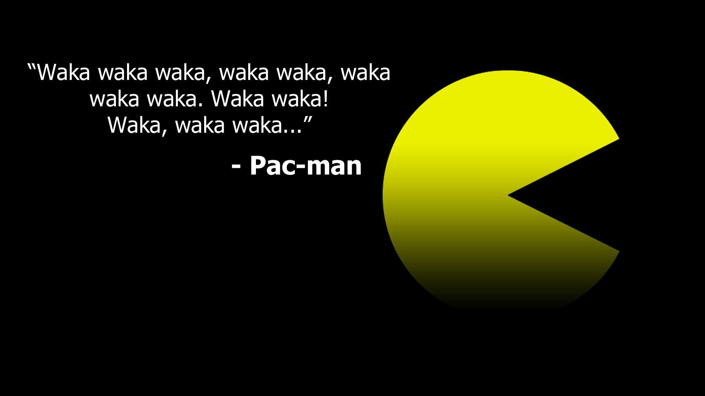

Intro

A Computer Science Graduate Student actively looking for a Full Time Job from May 2023.
- A Multi-Tasker, team player, good leader, fast-paced and a continuous learner.
- Passionate to code, solve problems and to develop highly scalable applications strictly aligned to requirements over business critical platforms.
- Hands-on Experience with various projects related to Machine Learning and Data science using Python and well proficient in using components like Natural Language Tool Kit and basic algorithms used to analyze data.
- I have various Internship level experiences and one my best is my Research Internship with Nanyang Technological University where I learnt and used Natural Language Processing using Python.
Experience
January 2021 - June 2021

- “Syntax and Semantic Analysis of Text for Human-Computer Interaction” under the guidance of Dr. Erik Cambria (Associate Professor, School of Computer Science and Engineering, NTU).
- The Research is based on enhancing the interaction system between Human and the Computer using Machine Learning and Data Analysis.
- Built a Dataset containing different words, idioms and Phrases using the help of multiple sources, to analyze the polarity, similarity, and the sentiment of the data. As the Idioms and Phrases have different sentiment according to the words used but their meaning is different.
- These Idioms and Phrases are used to train Computers for a better Human and Computer Interaction using Senticnet 6.0.
- I have collected large amounts of tweets including emojis from Twitter regarding major trending topics of that time, analyzed the data’s including emojis polarity and similarity to find out the sentiment of the data. With all that information I created multiple visual charts that indicate the twitterati’s sentiment over that trending topic.
March 2020 - June 2020
- Built different models using Blender that can be used in various filters and interactive games for Facebook, Instagram.
- I worked on various filters that used objects build from Blender using Spark AR under the guidance of different experts from The Facebook AR team. The making of filters included basic Spark AR concepts and in-depth java scripts and AR process model building.
- Worked on a Capstone Project, as a theme partner for JordIndian (YouTube Channel) for creating an entertaining game using AR.
May 2019 - June 2019

- Analyzed the rate of breast cancer by doing a project entitled “Predicting Breast Cancer using Machine Learning”.
- The medical dataset that contains breast cancer related parameters is taken from UCI repository.
- The dataset has been given as an input to various machine learning models such as Linear Regression, Logistic Regression, Naïve Bayes, KNN algorithm, Decision Tree, Random Forest, SVM algorithm, etc., and the model is trained and then tested using the same dataset.
- The Model that gives the most accurate results is used to create a platform where people can input different parameters that they have or given by a hospital to check is the tumor is benign or malignant.
Aug 2022 - Dec 2022
- Under the Guidance of Dr. Yuanlin Zhang, Ph.D. (Associate Professor and Graduate Program Coordinator, Department of Computer Science).
- Assist the Professor with grading for 206 students.
- Manage all the Internal affairs regarding students’ grades, attendance, difficulties, questions about the course/ syllabus.
Projects
Masking Sensitive Data using NLP (Master's Project TTU)

• Creation of Scam call datasets manually, i.e., recording calls with sentiments, as there not many transcribed call datasets available on the Internet where we can work on. In future the call datasets can be used for Sentiment analysis and train the computer on identifying scam calls on the sentiment of the caller and the information being transferred during the call.
• Identification and masking of Sensitive Data using Natural Language Tool Kit.
• TFIDF Vectorization- Converted transcribed call data into tokens of tokens and then vectorized the data to get values according to the data.
• Cosine similarity- Created new datasets for phone number, names, states etc., and vectorized them to get values and compared those values with the values obtained from the vectorization of transcribed call data using cosine similarity to find sensitive data.
• Regular Expressions- This is another method to Identify and mask sensitive data. Here we used regular expression such as zip_code="^[1-9][0-9]{3}[1-8]$" for finding zip codes in the transcribed call dataset and mask it.
Web Application (Student Activities Council)

• Designed and developed an application (yet to be published) for the student council for Vignan’s university.
• The application was built using Hyper Text Markup Language and the designing and texture was built using Cascading Style Sheets.
• I have used local database as well which has been connected to the application using NetBeans which works with Java Script.
Satellite positioning/tracking using Rabin-Karp String Matching

• I developed an application where it has all the coordinates (x, y, z) i.e., three-dimensional position of the satellite that is in space. This would help us track the position of the satellite from time to time.
• When a new satellite is being launched, there must be a particular position where the satellite will be placed. The Rabin Karp string matching algorithm will be used here to analyze all the positions of the satellite and find a perfect spot for the new satellite in space at a desired level z, and the algorithm is good in finding duplicates so, the satellite has a unique new position, so it does not collide with the other satellites.
• This application is limited to geosynchronous satellites.
End-to-End Encryption using C language

• Simple encryption system has been used to encrypt data that is transmitted between two people.
• I have created two accounts where each account has its own account name and password.
• When a person logs in to the account, they are asked if they want to send a message to anyone. If they want to, they are asked to type the message and enter the recipient. The recipient logs in to see that he received a message and puts in the key that he has from the sender to get the original message back.
FirstAid Assistance using Alexa
The project motto is to provide steps for first aid through voice assistant Alexa. It Provides step by step instructions with the invocation word “First aid”along with “type of the First aid”. AWS lambda function and NLP are leveraged to achieve the needed functionality.
Pacman Berkeley AI

Multi-programmed ghosts using different path finding algorithms. Automatic movement for PacMan as well as user-controlled and Reinforcement Learning activities from Berkeley AI materials
Skills
- Programming Languages: Intermediate Proficiency in C, Java, Python, HTML, SQL. Beginner Proficiency in C++.
- Software: Visual Studio, Google Collab, Anaconda, MySQL, Spark AR (Augmented Reality). Beginner Proficiency in Blender, AWS basics.
- Framework: Intermediate Proficiency in CSS. Beginner Proficiency in JavaScript.
- Additional: Intermediate Proficiency in Data science, Machine Learning, Computer Hardware.
Awards
- Best Outgoing Student of Department of Computer Science and Engineering (Gold Medal) - for all-round performance in Academics, Co-curricular and Extra-Curricular Activities during B. tech Program (2017-2021).
- Sri Bandarupalli Venkateswara Rao’s Endowment Medal – 2021 (Gold Medal) – for active involvement and outstanding Performance.
- Academic Excellence Award – for academic years: 2017-18 and 2018-19.
Leadership Experience
Jul 2019 - Aug 2020
• Organized over 50 events in the university which include state level and national level events.
• Hosted over 20 events.
Jul 2018 - Jun 2019
• Hosted over 20 events in and outside campus.
• Contributed to writing scripts for hosts and content to the Vignan’s monthly magazine.
Workshops Attended
• “Problem Solving Skills using C workshop 2017-2018” conducted by Andhra Pradesh State Skill Development Corporation, Govt. of Andhra Pradesh.
• “Google Android Developer Fundamentals Workshop 2019” conducted by Andhra Pradesh State Skill Development Corporation, Govt. of Andhra Pradesh.
• “Artificial Intelligence with Machine Learning” conducted by Technophilia Solutions at BITS pilani, Hyderabad with Microsoft as Technology Associate.
• Participated in a 36 Hour Technical Hackathon organized by Smart bridge in collab with IBM and developed a solution for “Prediction of Alcohol Consumption”.
Contact
📧 : vpagadal12@gmail.com
📱 : +1 (713) 291-0675
📍 : Lubbock, TX 79415